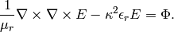

Screen (Maxwell’s Equations)¶
Git reference: Benchmark screen.
This example solves time-harmonic Maxwell’s equations. It describes an electromagnetic wave that hits a thin screen under the angle of 45 degrees, causing a singularity at the tip of the screen. The strength of the singularity makes this example rather difficult.
Equation solved: Time-harmonic Maxwell’s equations
(1)
Domain of interest is the square  missing the edge that connects the center with
the midpoint of the left side. It is filled with air:
missing the edge that connects the center with
the midpoint of the left side. It is filled with air:

Boundary conditions: Tangential component of solution taken from known exact solution (essential BC). See the main.cpp file.
Exact solution: This is rather complicated in this case - please look into the corresponding file exact_sol.cpp.
Code for the weak forms:
template<typename Real, typename Scalar>
Scalar bilinear_form(int n, double *wt, Func<Scalar> *u_ext[], Func<Real> *u, Func<Real> *v, Geom<Real> *e, ExtData<Scalar> *ext)
{
return int_curl_e_curl_f<Real, Scalar>(n, wt, u, v) - int_e_f<Real, Scalar>(n, wt, u, v);
}
Solution (real part of  ):
):
Solution (real part of  ):
):

Solution (imaginary part of ):

Solution (imaginary part of ):

Final mesh (h-FEM with linear elements):
Note that the polynomial order indicated corresponds to the tangential components of approximation on element interfaces, not to polynomial degrees inside the elements (those are one higher).
Final mesh (h-FEM with quadratic elements):

Final mesh (hp-FEM):

DOF convergence graphs:

CPU time convergence graphs: